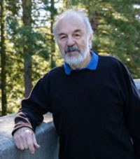
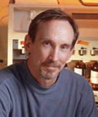
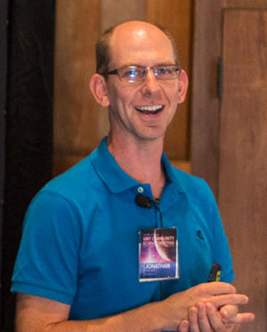

The Kraw Lecture Series on Science and Technology

The Kraw Lecture Series in Silicon Valley is made possible by a generous gift from UC Santa Cruz alumnus George Kraw (Cowell '71, history and Russian literature). The lecture series features acclaimed UC Santa Cruz scientists and technologists who are grappling with some of the biggest questions of our time.
These talks are free and open to the public
Our Kraw Lecture Series is so fantastic, we want to bring it right to you via live streaming. If you aren't able to join us in person the night of the event, you can now stream the lectures and join in the conversation via online comments. Lecture and live stream typically begin at 7 p.m.
-
Dec 5, 2017

UC Santa Cruz Treehouse Cancer Initiative
Making Precision Medicine Personal for Kids: How Researchers and Doctors are Giving New Hope to Kids with Cancer Using Big Data GenomicsThere are several truisms about childhood cancer: it tends to be aggressive, differs from adult cancers, and when treatments fail, time runs out quickly. Precision medicine powered by big data becomes personal when university researchers and doctors team up. The Treehouse Cancer Initiative at UC Santa Cruz uses comparative cancer genomic analysis to help doctors treat kids with few options. Learn more about how a new project partnering our Treehouse researchers with Stanford doctors is bringing new hope to families.
Featuring members of the UC Santa Cruz Treehouse Cancer Initiative:
Olena Morozova, co-founder
David Haussler, co-founder
Isabel Bjork, director
Lauren Sanders, Ph.D. studentUC Santa Cruz Silicon Valley Campus
3175 Bowers Avenue, Santa Clara
-
Nov 1, 2017

Carrie Partch: Circadian Rhythms: When Our Biological Clocks Go Bad . . .
Carrie Partch joined the UC Santa Cruz faculty in 2011. In her lab, Partch recently identified a gene that suppresses circadian rhythms in cancer, allowing tumor cells to escape daily controls on cellular growth. Now her lab is developing new therapeutic strategies that leverage circadian control over physiology to improve human health. She just received the 2018 Margaret Oakley Dayhoff Award from the Biophysical Society for her ground-breaking combination of biophysics and cell biology.
UC Santa Cruz Silicon Valley Campus
3175 Bowers Avenue, Santa Clara -
Jun 22, 2017
Exploring Biology’s Dark Matter: RNA
Recognizing Harry Noller, winner of the 2017 Breakthrough PrizeNoller, professor emeritus of molecular, cell, and developmental biology, recently received the 2017 Breakthrough Prize in Life Sciences for his discoveries about ribosomes, the tiny structures of the cell that Noller calls the “mothership of life.” His insights are taking us right to the brink of understanding the very origins of life on the planet.
From his unexpected discovery of the role RNA plays in the functioning of the ribosome has grown the world’s premier center for RNA research. The 16 research labs that comprise the UC Santa Cruz Center of Molecular Biology of RNA are forging new discoveries in the treatment of diseases like rheumatoid arthritis and cancer and developing new technological tools to advance the sciences.
Noller will be joined on stage by three Center researchers, Jeremy Sanford, Susan Carpenter, and Daniel Kim, who will discuss their work in the frontiers of molecular biology and the implications of RNA research on treating diseases and saving lives.
Silicon Valley Capital Club
View the lecture
50 W San Fernando Street, San Jose
-
May 16, 2017
Mark Akeson: Sequencing DNA from Remote Villages to the Space Station: The Nanopore Revolution
Akeson is a professor of Biomolecular Engineering at UC Santa Cruz. He earned his B.A. in History from UC San Diego, and his Ph.D. in Soil Microbiology from UC Davis, then came to UCSC following a post-doctoral fellowship at the National Institutes of Health. Akeson is one of the pioneers of nanopore sequencing and leads the UC Santa Cruz nanopore group. The nanopore group has made important advances in nanopore sequencing technology by analyzing DNA molecules directly from the nucleus of eukaryotic cells. Nanopore technology brings modern genomics out of the lab and into the field—think Ebola or Zika outbreaks—with tremendous potential for human health.
UC Santa Cruz Silicon Valley Campus
3175 Bowers Avenue, Santa Clara
-
Mar 22, 2017
Jonathan Fortney: How Common is the Earth? The Discovery and Characterization of Rocky Planets Around Other Stars
Fortney is an astrophysicist who focuses on understanding the structure and composition of planets in our solar system and "exoplanets" around other stars. He has been involved with NASA's Kepler spacecraft since its prime mission. He is also one of 15 principal investigators for a new NASA initiative, the Nexus for Exoplanet System Science (NExSS), which is a quest to find life on planets around other stars. Fortney is one of four new participating scientists NASA has chosen for the last phase of the Cassini Mission to Saturn, as the spacecraft dives between the planet's rings and its atmosphere to collect unprecedented data.
UC Santa Cruz Silicon Valley Campus
3175 Bowers Avenue, Santa Clara
Each lecture will be videotaped and archived here.
Questions? Contact UC Santa Cruz Special Events specialevents@ucsc.edu or (831) 459-5003.